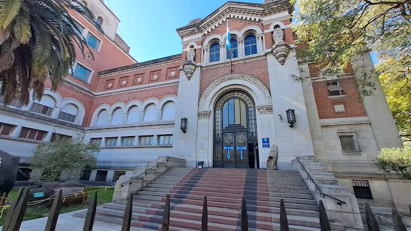
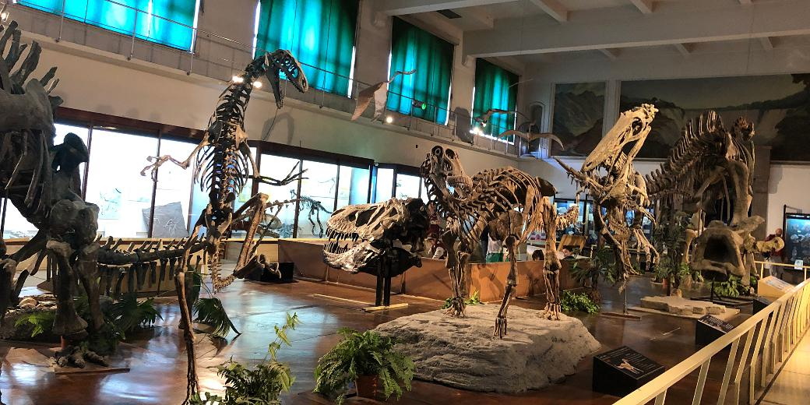

Llega el mejor evento del año

La Noche de los Museos 2026 en Buenos Aires se realizará el sábado 14 de noviembre de 2026, de 19:00 a 02:00 horas. La entrada es libre y gratuita
La Noche de los Museos 2026 en Buenos Aires se realizará el sábado 14 de noviembre de 2026, de 19:00 a 02:00 horas. La entrada es libre y gratuita

Este es el museo más antiguo de la Argentina, ideado en 1812 y finalmente fundado en 1823 por inspiración de Bernardino Rivadavia, entonces ministro de gobierno de la provincia Buenos Aires. El museo se encuentra en Avenida Angel Gallardo N°490


El edificio que alberga al museo, ubicado en el Parque Centenario, es uno de los pocos que fueron construidos especialmente para ese fin y se pueden ver numerosos detalles decorativos y ornamentales alusivos a la flora y fauna autóctoctona en su estructura. La colección es una de las más completas de América Latina, destacándose las salas temáticas de Paleontología, Geología, anfibios, reptiles y artrópodos, entre otras.

La historia del museo comenzó a principios del siglo XIX y muy poco después de producida la Revolución de Mayo de 1810, cuando Bernardino Rivadavia, secretario del Primer Triunvirato -y gran impulsor de las ciencias y la cultura- dispuso, en 1812, que las provincias debían reunir elementos para "dar principio al establecimiento en la Capital de un Museo de Historia Natural". La misma disposición fue impulsada nuevamente por Rivadavia en 1823, cuando desempeñó el cargo de Ministro de Gobierno y Relaciones Exteriores del gobernador de Buenos Aires, general Martín Rodríguez logrando su objetivo al llegar a la Presidencia de las Provincias Unidas del Río de la Plata en 1826-1827. En un principio el museo funcionó en las celdas altas del Convento de Santo Domingo (1826-1854) y en la vieja Procuraduría Jesuítica de la Manzana de las Luces hasta que en el año 1937 el presidente Agustín Pedro Justo inauguró la primera etapa del nuevo y gran edificio actual, cuya construcción continuó durante los siguientes años. Primero se levantaron los dos volúmenes de los extremos, y luego se culminó conectándolos con la extensa fachada de mayor altura. El edificio actual, emplazado en Parque Centenario, se construyó exclusivamente para albergar el Museo. Entre su proyección y construcción se invirtieron unos 15 años, entre 1925 y 1940 aproximadamente. Se construyó en tres etapas: el ala sudoeste (por donde hoy ingresa el público a la exhibición), el ala noroeste y finalmente el área central que se une ambas alas. Tanto en el exterior como en el interior del edificio se encuentran variados ornamentos, que ilustran fauna principalmente y fueron realizados por diversos artistas, como Alfredo Bigatti, Emilio J. Sarguinet y Donato A. Proietto, entre otros.

Recorrimos todas las salas, expertos te invitaron a ser paleontologo por una noche.

Descubrimos que no necesitamos ir al cine para ver y escuchar historias de dinosaurios.

La tierra temblaba cuando caminaban y estaban en Argentina hace muchos siglos atrás.

También aprendimos que dinosaurio significa largo terrible.